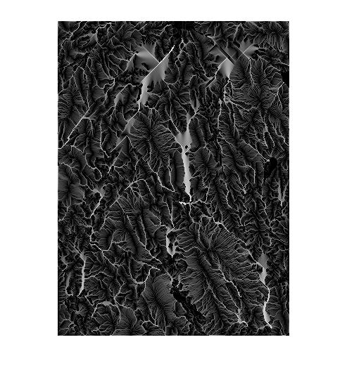

upslopeArea
Upslope area measurements for a DEM
Contents
Description
A = upslopeArea(E, T) computes the upslope area for each pixel of the DEM matrix, E. T is the sparse system of linear equations computed by flowMatrix; it represents the distribution of flow from pixel to pixel. A contains the upslope area for each corresponding pixel of E.
Note: Connected groups of NaN pixels touching the border are treated as having no contribution to flow.
Reference
Tarboton, "A new method for the determination of flow directions and upslope areas in grid digital elevation models," Water Resources Research, vol. 33, no. 2, pages 309-319, February 1997.
Algorithm notes
The Tarboton paper is not very specific about the handling of plateaus. For details of how plateaus are handled in this code, see the algorithm notes for the function flowMatrix. In particular, see the subfunction plateau_flow_weights in flowMatrix.m.
Example
s = load('milford_ma_dem');
E = s.Zc;
R = demFlow(E);
T = flowMatrix(E, R);
A = upslopeArea(E, T);
imshow(log(A), [])
 See also
demFlow, dependenceMap, fillSinks, flowMatrix, postprocessPlateaus.